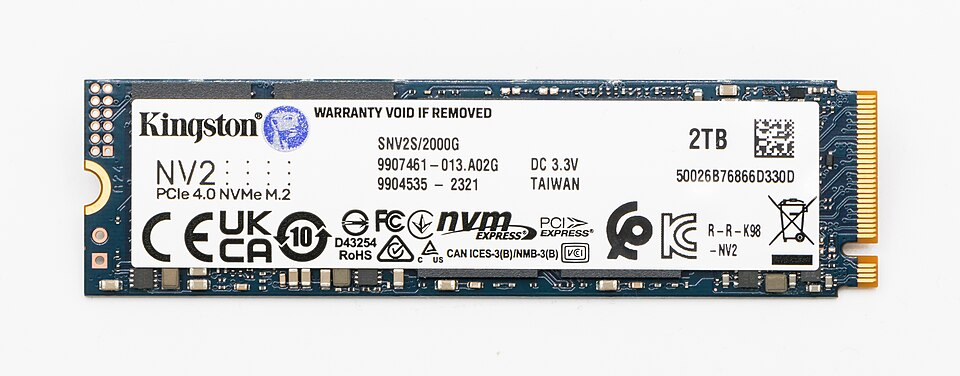

SSD vs. HDD para tu servidor de medios: cuándo conviene cada uno
Montas tu Jellyfin o Plex, y llega la pregunta del millón: ¿guardo los 4 TB de películas en un SSD o en un disco duro de toda la vida? La respuesta corta es que la mayoría de servidores caseros usan los dos, cada uno para lo que hace mejor. La respuesta larga —cuándo compensa un SSD grande y cuándo es tirar el dinero— es lo que desgranamos aquí.

Lo fundamental: para reproducir video, la velocidad sobra
Un dato que cambia toda la ecuación: reproducir una película en 4K necesita unos 25–50 Mbps de lectura sostenida. Un disco duro mecánico moderno entrega 150–250 MB/s, es decir, entre 1.200 y 2.000 Mbps. Incluso con varias reproducciones simultáneas, el HDD va sobrado para servir archivos de video.
El SSD brilla en accesos aleatorios y pequeños: arrancar el sistema, cargar la base de datos de la biblioteca, generar miniaturas, mover la caché de transcodificación. Ahí un NVMe es decenas de veces más rápido que un HDD. Por eso la combinación ganadora es tan clara.
Comparativa: SSD frente a HDD
| Criterio | SSD (SATA/NVMe) | HDD (mecánico) |
|---|---|---|
| Precio por TB (orientativo) | Entre $50 y $90 por TB en 1–4 TB (septiembre de 2026) | Entre $15 y $30 por TB en 4–12 TB (septiembre de 2026) |
| Velocidad secuencial | 500 MB/s (SATA) hasta 3.000–7.000 MB/s (NVMe) | 150–250 MB/s |
| Acceso aleatorio | Muy superior: ideal para sistema y bases de datos | Lento en aleatorio; suficiente en secuencial |
| Ruido | Silencio total (sin partes móviles) | Audible: giro, cabezales y vibración |
| Consumo | Muy bajo (2–6 W en uso) | Moderado (5–10 W en uso, según especificaciones) |
| Resistencia a golpes | Alta (sin mecánica) | Baja: un golpe en marcha puede matarlo |
| Desgaste | Ciclos de escritura limitados (TBW); irrelevante en uso doméstico normal | Desgaste mecánico con los años; los NAS vigilan su salud con SMART |
| Capacidades habituales | Hasta 4–8 TB a precio razonable | Hasta 20–24 TB por disco |
La combinación típica: sistema en SSD, almacén en HDD
Es la arquitectura que recomiendan la mayoría de guías de la comunidad y la que mejor equilibra coste y rendimiento:
- SSD (250 GB – 1 TB): sistema operativo, Docker, la base de datos de Jellyfin/Plex, los metadatos, las miniaturas y la carpeta temporal de transcodificación. Todo lo que se lee y escribe en pequeño y a menudo.
- HDD (4 TB en adelante): la biblioteca de medios propiamente dicha: películas, series, música, fotos. Archivos grandes que se leen de forma secuencial, donde el HDD rinde de sobra.
El efecto práctico: la interfaz de Jellyfin responde al instante, las búsquedas son inmediatas y la transcodificación no sufre, mientras el grueso de los terabytes se paga a precio de HDD. Un SSD SATA de 500 GB para sistema cuesta entre $30 y $50 (septiembre de 2026): la mejora más barata que puedes hacerle a tu servidor.
Ver precio de un SSD SATA de 500 GB–1 TB para el sistema y la caché.
Ver precio de un HDD CMR de 4–8 TB para la biblioteca de medios.
Cuándo SÍ compensa un SSD grande
Hay escenarios donde el HDD se queda corto y el SSD grande está justificado:
- Silencio absoluto: si el servidor está en el dormitorio o en un salón donde se nota cada decibelio, un servidor 100 % SSD es inaudible. Es caro por TB, pero el silencio no tiene precio para algunos.
- Muchas transcodificaciones simultáneas: la carpeta temporal de transcodificación sufre escrituras intensas; en SSD va más suelta, sobre todo con varios streams a la vez.
- Bibliotecas con decenas de miles de archivos pequeños (música en FLAC, fotos): el acceso aleatorio del SSD acelera el escaneo y la navegación.
- Servidor en mini PC o portátil sin bahías de 3,5": a veces el SSD es la única opción física razonable.
- Bajo consumo extremo: en un servidor con batería/UPS pequeña o con energía solar, cada vatio cuenta y el SSD consume menos.
En estos casos, un SSD de 2–4 TB para medios cuesta entre $100 y $300 (septiembre de 2026). Compensa si el silencio o la velocidad aleatoria son requisitos, no caprichos.
Ver precio de SSD de 2–4 TB si tu caso necesita silencio o velocidad.
Cuándo el HDD es imbatible
- Bibliotecas grandes (8 TB o más): el precio por TB del HDD es 3–4 veces menor. Llenar 12 TB en SSD cuesta una fortuna; en HDD es lo normal.
- Archivo frío: copias de seguridad, series que ves una vez al año, fotos de archivo. Datos que se escriben una vez y se leen de vez en cuando.
- NAS con RAID: los HDD CMR de gama NAS son el estándar para arrays domésticos (ver nuestra guía de discos para NAS).
El mito del desgaste del SSD
Mucha gente teme "gastar" el SSD con la transcodificación. Los SSD modernos tienen una resistencia de escritura (TBW) de cientos de terabytes: en uso doméstico normal, la comunidad de usuarios reporta que el desgaste por transcodificación es despreciable frente a la vida útil del disco. No es un motivo para evitar el SSD en la caché; sí es un motivo para no pagar de más por un SSD "pro" con TBW extremo que no vas a aprovechar.
Cómo elaboramos esta comparativa
Evaluamos cuatro criterios: precio por terabyte, rendimiento en los patrones de uso de un servidor de medios (lectura secuencial de archivos grandes frente a acceso aleatorio de bases de datos), ruido y consumo en funcionamiento 24/7, y resistencia y vida útil esperada. Las fuentes fueron las especificaciones oficiales de fabricantes de SSD y HDD, la documentación de Jellyfin y Plex sobre requisitos de almacenamiento y transcodificación, y el consenso de comunidades de usuarios de servidores caseros sobre arquitecturas típicas.
No realizamos pruebas físicas propias: no medimos velocidades, consumos ni niveles de ruido en nuestro laboratorio. Las cifras citadas provienen de especificaciones oficiales y documentación de los proyectos mencionados.
Veredicto por caso de uso
- Servidor de medios típico en casa: SSD pequeño para sistema + HDD grande para medios. La combinación ganadora en el 90 % de los casos.
- Servidor en el dormitorio, silencio total: todo SSD, asumiendo el sobrecoste por TB.
- Biblioteca de más de 8 TB: HDD CMR sin dudarlo; el SSD sale carísimo a esa escala.
- Varias transcodificaciones simultáneas: SSD para sistema y carpeta temporal de transcodificación; HDD para el almacén.
- NAS dedicado con RAID: HDD CMR de gama NAS; el SSD solo como caché en modelos que lo soporten.
Preguntas frecuentes
¿Un HDD es suficiente para ver películas en 4K?
Sí, de sobra. El 4K necesita unos 25–50 Mbps y un HDD moderno entrega más de 1.000 Mbps en lectura secuencial. Los problemas de reproducción en 4K casi siempre vienen de la transcodificación (CPU/GPU), no del disco.
¿Qué tamaño de SSD necesito para el sistema?
Con 250–500 GB tienes de sobra para el sistema operativo, Docker, la base de datos de medios y la caché de transcodificación en un hogar normal. Sube a 1 TB si gestionas bibliotecas muy grandes o muchos contenedores.
¿Puedo usar un SSD externo por USB para los medios?
Sí, y funciona bien para bibliotecas modestas: USB 3.0 da de sobra para varios streams. Para un servidor 24/7 serio, un disco interno (o un NAS) es más fiable a largo plazo que un externo colgando del puerto USB.
¿Merece la pena un NVMe frente a un SATA para el sistema del servidor?
En la práctica del día a día, apenas notarás la diferencia: ambos son órdenes de magnitud más rápidos que un HDD en acceso aleatorio. Elige NVMe si tu placa lo soporta y el precio es similar; si no, un SATA cumple perfectamente.
Rangos de precio orientativos, verificados en septiembre de 2026. Los precios y la disponibilidad pueden cambiar.